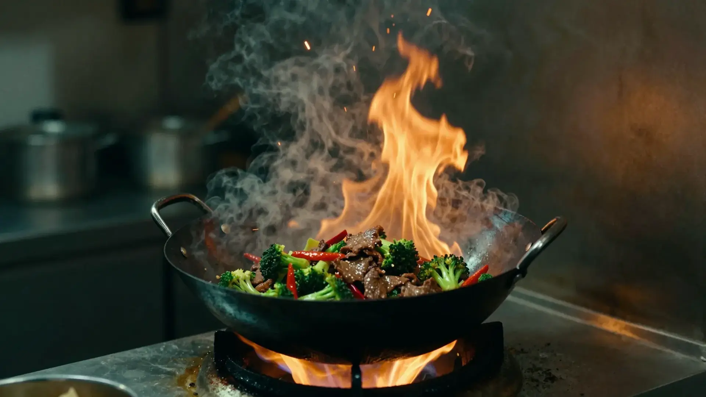

Modern Chinese kitchen
The breath of the wok.
Carbon steel, a flame at full height, and a kitchen that cooks to the second. Tuesday to Sunday, from five.
-
Fire
A burner kept at full height, so the pan never has time to cool.
-
Steam
Wine and stock flash at the wall of the wok and lift the aroma into the dish.
-
Texture
Small cuts, dry ingredients, and a toss that never stops. Crisp stays crisp.
-
The plate
Out of the wok and onto jade or slate within seconds, while it is still singing.
Char siu, maltose and five-spice $24